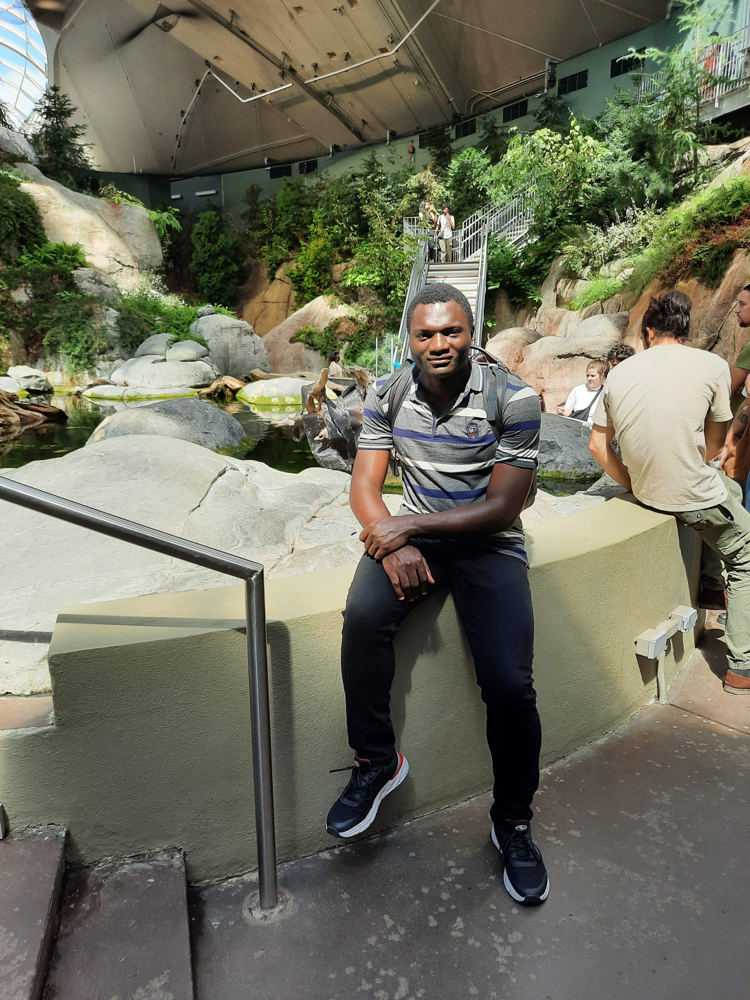

Arsene Brice Zotsa-Ngoufack
P.h.D in Mathematics
Postdoctoral Researcher at UQAM


About me
Hi! My name is Arsene Brice Zotsa-Ngoufack and I'm a PhD in mathemactics. I did my Ph.D at Aix-Marseille Université/INRAE in France under the supervision of Raphael Forien, Etienne Pardoux and Raoul Ayissi. I studied from 2013 to 2019 at the University of Yaoundé I in Cameroon, where I obtained a Master's degree in complex analysis under the supervision of Professor Edgar Tchoundja. Then, during the academic year 2019-2020, I did a Master's degree in Probability-statistics applied to life sciences at Université Félix Houphouet Boigny d'Abidjan Cocody (M2PSAV). For this master's degree, I did my intership at INRAE in France under the supervision of Raphael Forien and Etienne Pardoux.
I defend my Ph.D on stochastic epidemic models with varying infectivity and waning immunity: Functional Law of Large Numbers, Functional Central Limit Theorem's. Weighted norm inequalities in the variable Lebesgue spaces for the Bergman projector on the unit ball of Cn, [Thesis,slide]
I am currently a postdoctoral researcher at Université du Québec à Montréal, working with Hélène Guérin and Arthur Charpentier on stochastic epidemic models related to insurance issues. I am also working on Backward stochastic differential equation and generative AI.
« Research is a perpetual quest for intellectual maturity» Zotsa.
Research interests
Asymptotic behavior of PDE, Stochastic process, Stochastic modeling, Stochastic epidemic, Stochastic particles systems, Diffusion process, Branching process, SPDE, Hawkes process, AI generative, Actuarial science, Statistic, Functional Analysis, Complex Analysis, Bergman Projector.Education
- PhD in Mathematics, 2024.
Aix-Marseille Université: Institut de Mathématiques de Marseille & INRAE, France. - MSc in Probability and Statistics, 2020
Université Félix Houphouet Boigny d'Abidjan Cocody, Ivoiry coast. - MSc in pure Mathematics, 2019
University of Yaoundé I, Cameroon. - BSc in Mathematics, 2017
University of Yaoundé I, Cameroon.